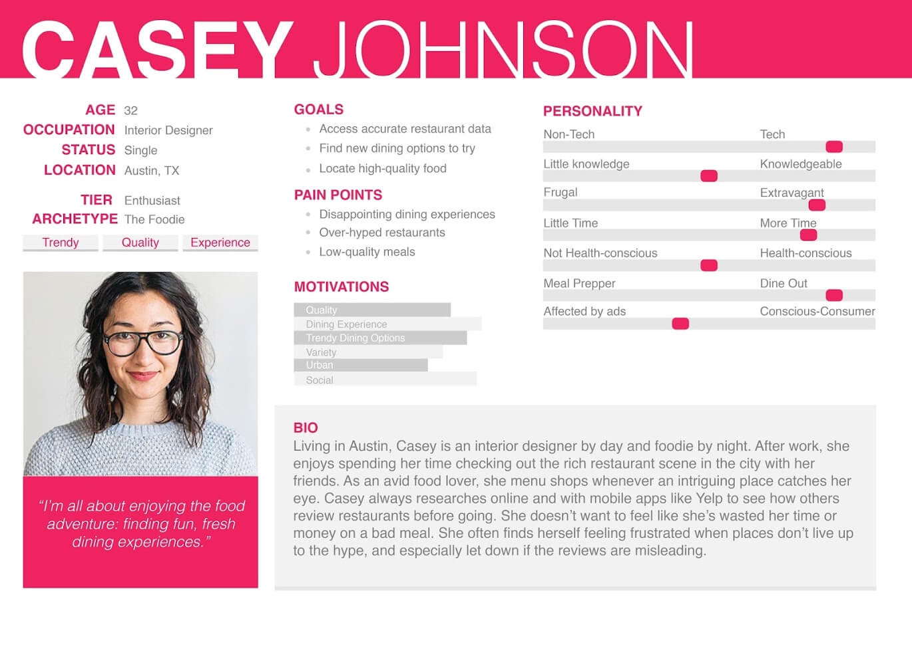
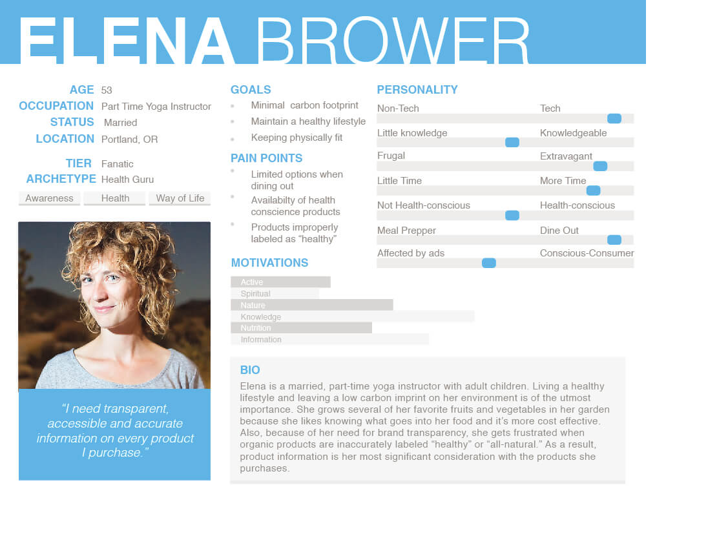
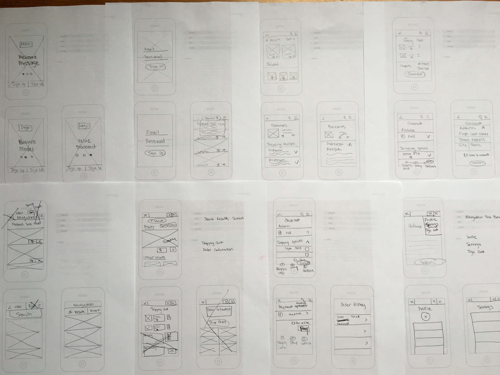
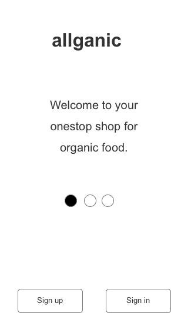
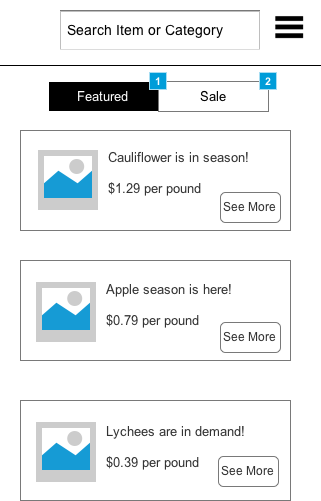
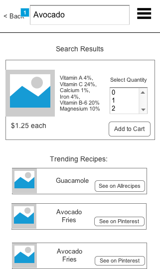
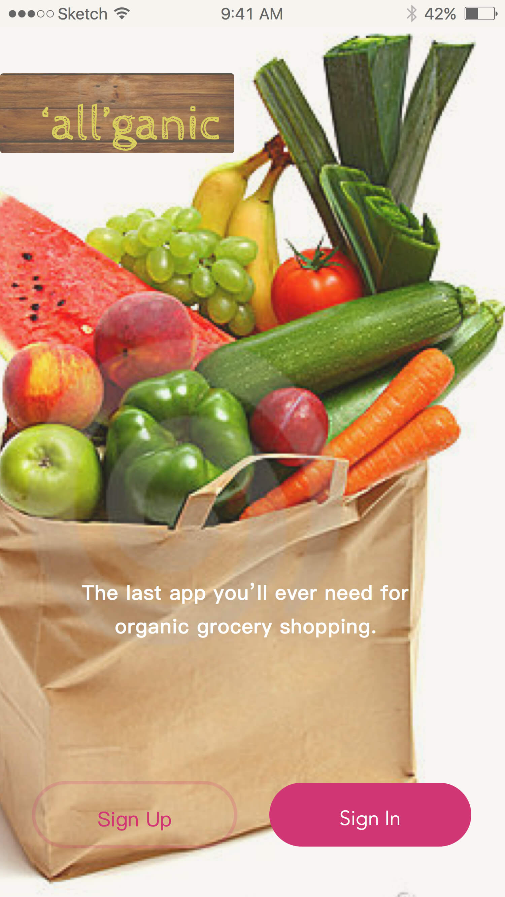
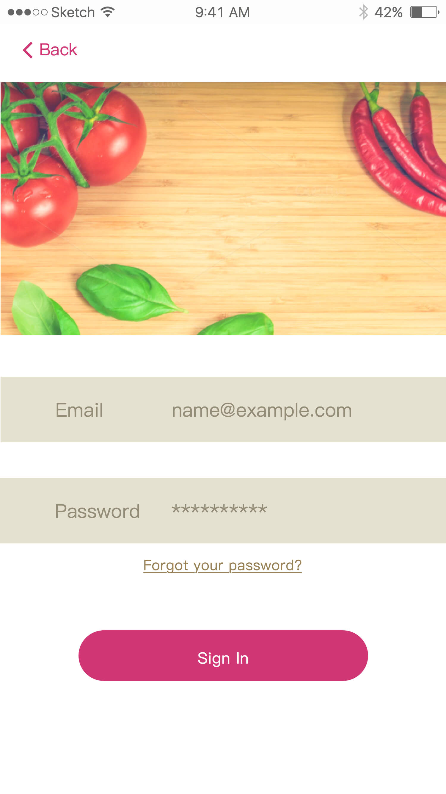
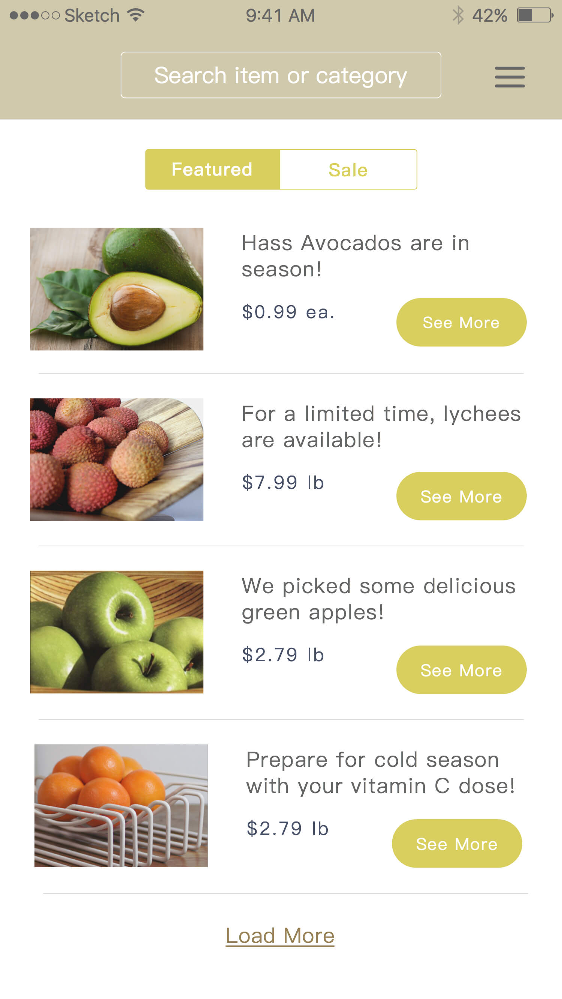

Organic Food Mobile App
ROLE
UX/UI Designer
TOOLS
Axure, Sketch
TIMELINE
5 Day design sprint
Daily scrum standups
DELIVERABLES
- Guerilla interviews
- User personas
- Journey maps
- Low-fidelity wireframes
- Interactive prototypes
- Style tiles
- Screen mockups
BACKGROUND
Organic products are the fastest growing segment of agriculture and the entire industry is comprised of smaller farms that haven’t yet achieved as much in the way of scale. In this DESIGNATION mock project from November 2015, a financial organization is hoping for insight into what technological disruption opportunities might exist as the next frontier for venture funding.
CHALLENGE
As a UX/UI designer on a team of four with no funding, we were tasked with utilizing UX methodology to collectively conduct research and then individually design a concept solution.
Day 1 | Understand
We were provided the following market research about some U.S. industry data for the organic sector:
- Industry: US consumer sales of organic products exceed $39 billion
- Organic products have grown on average more than 20% per year over the last 7-10 years
- 51% of families are buying more organic products than a year ago
- The biggest hurdle for organics is the added cost of sustainable practices
Guerilla Research
While we created an ideal exploratory research plan to understand production, distribution, and consumer segments in the organic space, for the sake of this project’s feasibility, we opted for guerilla research instead.
User Interviews
As an interviewer, I make sure to have a beginner’s mindset to allow my subjects to define what universal words mean to them, to feel like we’re in a conversational setting, and to move at a pace that allows them to share more about certain moments. In one day, I conducted 4 in-person interviews with peers that brought our cohort’s interview total to 17 transcripts.
- Sample Questions:
- How do you go about planning your meals or deciding what to eat in advance?
- Can you walk me through your most recent grocery shopping trip?
- What resources do you use to help you shop for groceries or make food choices?
- What does the term “organic” mean to you?
Affinity Diagram
I took time to read each interview transcript thoroughly and jot notes before transferring insights onto post-its. As a team, we synthesized our research by affinity mapping patterns and trends in what we read to make sense of our individual insights. From this collective exercise, we moved on to define the problem we’d solve, develop personas, create a journey map, and define our design principles.
Problem
The high cost of organic foods serves as a deterrent for consumers from purchasing them. We seek to develop a service-based technology that offers lower cost organic items sourced from local farmers and businesses to provide consumers with a more affordable channel for making purchases.
Persona Development
 Day 2 | Diverge
After understanding the current goals and frustrations with organic eating experiences of our personas, we individually sketched various mobile concepts before getting feedback on our strongest solutions to wireframe. We focused on mobile apps to fulfill our personas’ need for convenience and to serve as a resource that can be on-the-go with them.
Ideation
I started with our design principles in mind to list out the key functionalities of my concept before moving onto visuals. For me, I wanted to bring the “community garden” to users like Casey and Elena because it would allow them to try new organic products in a manageable way and offer that convenience factor of an e-commerce experience.
- Design Principles
- Transparent: make organic food facts, food quality details and price comparison information clear and accessible
- Reliable: accurate and dependable source
- Convenience, time and efficiency: help user for planning and shopping process
- Social matters: build for people to share
- Inclusive, intuitive, easy to learn and enjoyable to use
- Key Functionalities
- Categorization of in-season (featured) and sale items
- Access to nutritional facts and photos of organic products
- Streamlined process to check-out with ability to store payment and delivery preferences
Concept Sketching

Visual Exploration
To guide my sketching, I explored the visuals of mobile apps in the grocery delivery, organic foods, and e-commerce space. I wanted to emulate the feel of a simplistic interface, with legible typography, ample white space, and colorful food imagery.
Day 3 | Decide
Once a decision was chosen by our project manager, I brought my wireframes into Axure for rapid prototyping while creating two visual design directions with style tiles.
Mobile Wireframes
  
Day 4 | Prototype
Day 5 | Validate
For this project, I usability tested with design peers for feedback and then focused on creating mock ups of the key screens for my app concept. I went with style tile 1 based on our project manager’s feedback and how the visual identity fit our design principles and our personas.
allganic is an organic delivery app for locally sourced in-season products to connect people with local farmers and producers directly.
Mobile Screen Mockups
  Next Steps
For this project, I received feedback about interaction and visual design enhancements that I will use to improve my future mobile interface designs.
Personal Reflection
For me, it was daunting at first to compress the design-thinking process into a 5-day sprint, but this process of rapid prototyping helped me see the method’s value. I learned that when a project calls for it, that being resourceful with what is available, can really help deliver results in a short timeframe. As a designer who likes to take time and think things through before making decisions, this was a very valuable experience with applying UX methodology to design sprints that truly prepared me for future agile project environments.